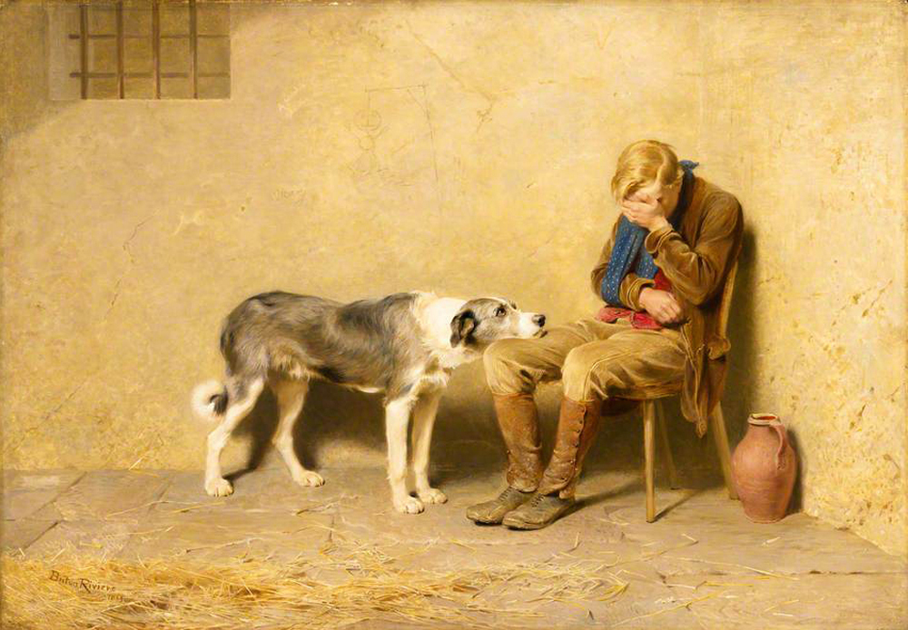

PICK UP

브리턴 리비에르, [신뢰(Fidelity)], 1869년
19세기를 지나면서 유럽은 도시 산업사회로 탈바꿈했고, 20세기는 도시화를 바탕으로 한 자본주의가 보편화되어가는 시기였다. 농촌 사람들이 일자리를 찾으러 대도시로 몰려들었고, 값싼 노동력을 제공하며 먹고 살았다. 사람들을 거대한 도시에서 낯선이들에게 둘러싸여 비좁은 집에서 살아야했다. 가족과 떨어져 살아야하는 이들에게 함께 사는 동물은 감정을 나누는 친구이자 가족이 되었다. 더 이상 사랑스런 놀이대상(애완)이 아니라 함께 사는 반려동물로 개의 위치는 이동했다. 개들은 함께 사는 식구들의 극진한 보살핌을 받았다.팔을 다치고 무언가에 낙담하고 좌절한 반려인의 무릎에 고개를 얹고 바라보는 그림 속 개의 근심어린 눈빛은 저들이 나눈 지난 시간들이 어떠했을지를 일러준다. 충성과 신뢰의 동물인 개는, 이제 반려견으로서 반려인의 마음을 지켜준다. 진정한 보살핌은 보살핌을 받는 쪽과 하는 쪽 모두에게 깊은 충만감을 선사한다. 현대인과 개의 관계를 가장 단적으로 보여주는 그림이다.
계속 읽기